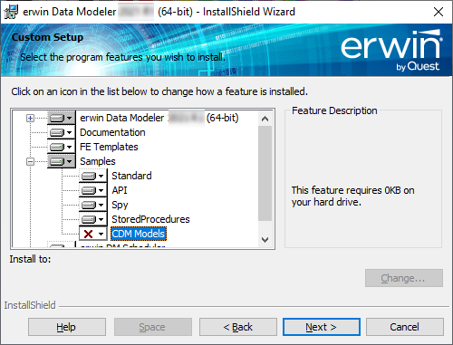

You many choose to install erwin Data Modeler (DM) in one of the following ways:
For the Workgroup Edition, install erwin DM on each computer that accesses Mart.
To install erwin DM using a silent installation, run the following command:
"<erwinDM .exe location>\<executable-name>.exe" /s /v"REBOOT=ReallySuppress LICENSECODE=<code> /norestart /qn /L <erwinDM .exe location>\<log-file-name>.log"
This command takes the location of the executable file and the license code as parameters. It installs erwin DM without restarting your system and creates a log file at the specified location.
Silent Installation does not work for upgrading erwin DM. To upgrade to a newer version of erwin DM, first uninstall the existing version and then use the steps for Silent Installation to install the newer version.
For example, assume the following:
Based on the above assumptions, the command is as follows:
"C:\Build\EDM12.1-b8020-64bit.exe" /s /v"REBOOT=ReallySuppress LICENSECODE=123456789012345678 /norestart /qn /L C:\Build\install.log"
Following are the scenarios and the respective commands that you can follow:
Use the same executable file for Standard and Workgroup Editions.
To install erwin DM using the executable file:
If you run an install without Administrative privileges, all files may not be installed or upgraded, and users can encounter problems when running the software.
Download the erwin.exe file from the online erwin product page and run it.
The Installation Wizard opens.
The program files are copied and erwin DM is installed.
You can install erwin DM Navigator using the erwin.exe file or a separate Navigator.exe file.
Samples
erwin DM provides sample models with the installer for your use. You can use these models to learn data modeling and to get familiar with erwin DM. By default, the installer installs the eMovies and PublicationSystemSample models. To install CDM models, you need to select them for installation on the Custom Setup screen of the installation wizard.
To install CDM models, follow these steps:
On the Custom Setup screen, select Samples > CDM Models.

Click . Then, click This feature will be installed on the local hard drive.
Follow the installation wizard to complete the installation.
Once installation is completed, CDM models are available at one of the following locations depending on your erwin DM version:
C:\Program Files\erwin\Data Modeler r9\BackupFiles\Samples\CDM Models
C:\ProgramData\erwin\Data Modeler\9.96\Samples\CDM Models